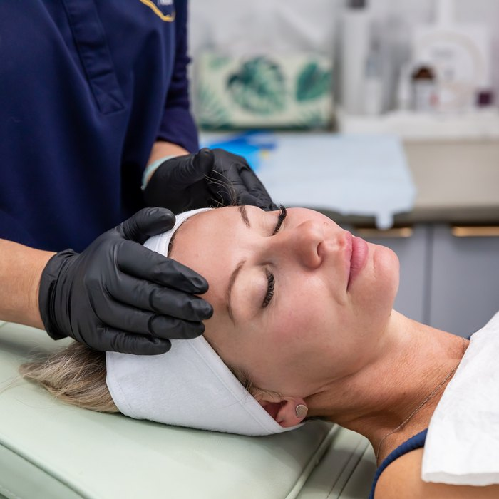

The skin you were left with
You dealt with the breakouts years ago. What is still here is the texture, the pores and the scarring - and that is a completely different problem to treat.
Take the free skin assessmentActive acne is an inflammatory problem. What it leaves behind is structural - the skin healed with less collagen than it started with, which is why the surface is pitted or uneven. No serum reaches that, because the problem is not on the surface.
Smooth skin reflects light evenly. Textured skin scatters it, which reads to the eye as dull, tired and older - regardless of how few lines you have. Improving texture is often the single biggest change you can make to how rested you look.
Controlled injury, in the right hands. Medical-grade microneedling creates precise micro-channels that prompt the skin to lay down new collagen in the places it is missing. Paired with the right actives - NCTF or exosomes - the repair goes further and faster.
This takes a course, not a session, and Tracey will tell you that before you book rather than after. A single microneedling treatment is a taste. Three to four is a change.
What we would use
Which of these is right for you depends entirely on your face. That is what the assessment decides, and it is why Tracey will not quote you before she has looked at you.
Collagen without needles, and without a single day off.
$325 · 30 minutes Collagen & Skin QualityRepairs the skin from the inside rather than filling it from the outside.
$375 · 30 minutes MicroneedlingAsks the skin to repair itself, then gives it what it needs to do the job.
$245 · 45 minutes Advanced Nurse TreatmentsUses your own blood to tell your skin to repair itself.
Consultation requiredEvery treatment is assessed individually. A consultation with a registered nurse is required before any procedure, and individual results vary.
The questions people actually ask
It is uncomfortable rather than painful, and it is managed. You will be pink for a day or two afterwards.
At least three, two weeks apart, and often four. That is why the packages exist - not as a sales tactic, but because that is the honest number.
It can improve it significantly. Anyone telling you they can erase deep scarring entirely is not being straight with you, and Tracey will not.
Raise it at the assessment. Active inflammation changes what is appropriate and when.
Free · 60 seconds · No obligation
Take the free skin assessment. Five questions, and you will get back a straight read on what is driving the change and what would actually help - whether or not you ever book with us.